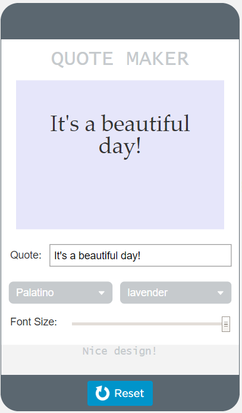
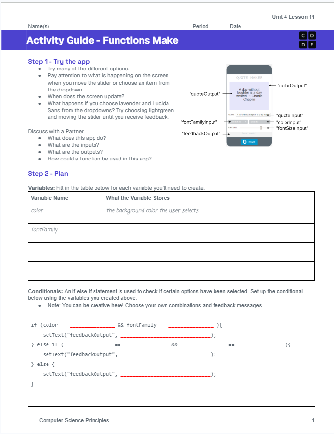

Today you will build an app on your own, using variables, conditionals, and an updateScreen function to design a quote.

Today you will write the code for the Quote Maker. The screen is already designed for you.
The user types a quote, picks a font and a background color, and slides to set the font size. The app shows the quote with those choices and gives feedback on the design.
Your code will use an updateScreen function to keep everything on the screen up to date.
Open Lesson 11, Level 1 on Code.org and try many of the different options. Watch what happens on the screen when you move the slider or choose from a dropdown. When does the screen update?
1What does this app do?
2What are the inputs?
3What are the outputs?
4How could a function be used in this app?
Every element on the screen already has an id. Your code will use these names.
quoteInputThe quote text box
fontFamilyInputThe font dropdown
colorInputThe color dropdown
fontSizeInputThe font size slider
colorOutputThe quote’s background
quoteOutputThe quote itself
feedbackOutputThe design feedback
Build the Quote Maker with the pattern from Lesson 4.9.
Each onEvent stores the new input in a variable, then calls updateScreen.
updateScreen is declared once and sets every output.
1var count = 0;
2updateScreen();
3
4onEvent("upButton", "click", function() {
5 count = count + 1;
6 updateScreen();
7});
8
9onEvent("downButton", "click", function() {
10 count = count - 1;
11 updateScreen();
12});
13
14function updateScreen() {
15 setText("countLabel", count);
16 if (count > 20) {
17 setProperty("countLabel", "text-color", "green");
18 }
19}In your activity guide, list a variable for each piece of information, like color and fontFamily.
Then fill in this if-else-if statement. Choose your own combinations and feedback messages.
if (color == && fontFamily == ) {
setText("feedbackOutput", );
} else if ( == &&
== ) {
setText("feedbackOutput", );
} else {
setText("feedbackOutput", );
}
Use the activity guide to plan your code before you start building. Fill in the variables you will create and the if-else-if statement for the feedback.
Step 3 of the activity guide includes steps you can follow to build the app, or you can use your own process.
Test each combination from your if-else-if statement to make sure the right feedback appears.
Step 1Open Lesson 11, Level 1 on Code.org, then try the app and discuss the questions with a partner.
Step 2Plan your variables and your if-else-if statement in the activity guide.
Step 3Build the Quote Maker with an updateScreen function.
Step 4Test every feedback combination and check the rubric before you submit.
Step 5Complete the writing practice and submit your activity guide.
Check your app against the rubric before you click Submit on Code.org.
An onEvent is created for every required input.
Variables store every piece of information the app uses.
An if-else-if statement checks the selected options and shows feedback.
A function updates every output, and every onEvent calls it.
No errors are present in the code.
Comments explain every onEvent and function.
This question is based on the app you submitted. It is practice for the written part of the Create Performance Task.
To make sure the feedback message is displayed correctly for the user’s inputs, describe a set of inputs you would use to test the updateScreen function. For each set of inputs, give the expected feedback message. How would you verify that each conditional statement in the code behaves as intended?
Submit your completed activity guide along with your completed app.
These sentence starters may help you write your response. You can use or change some or all of them.